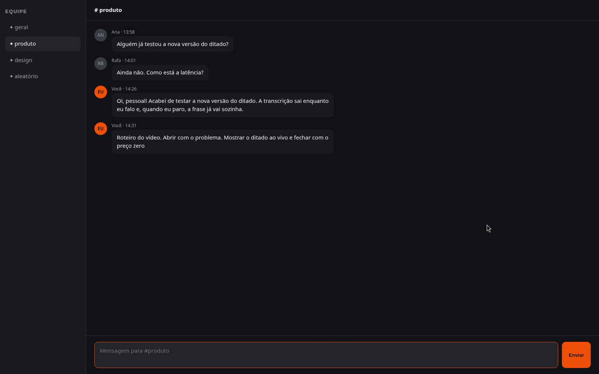
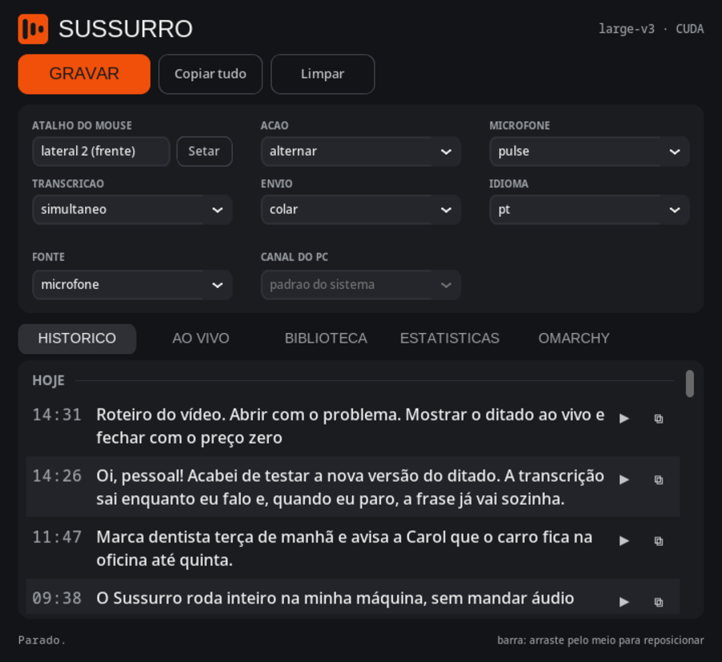
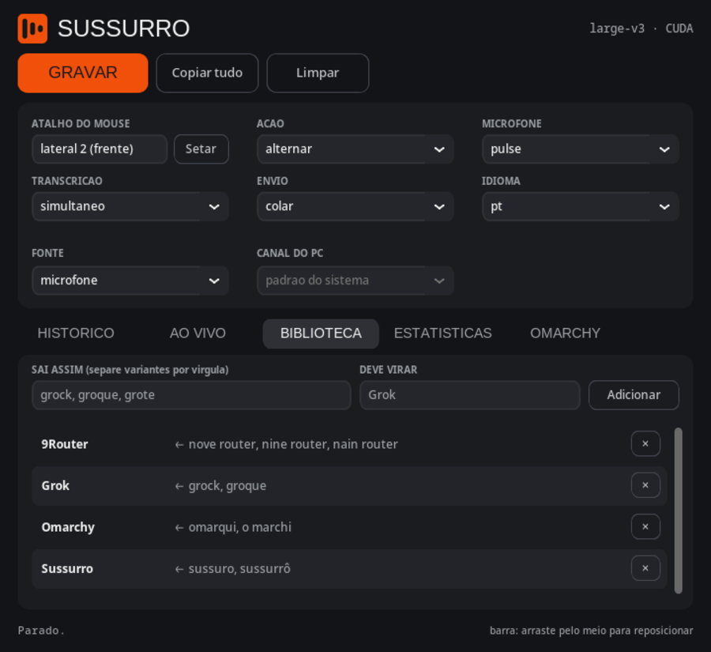
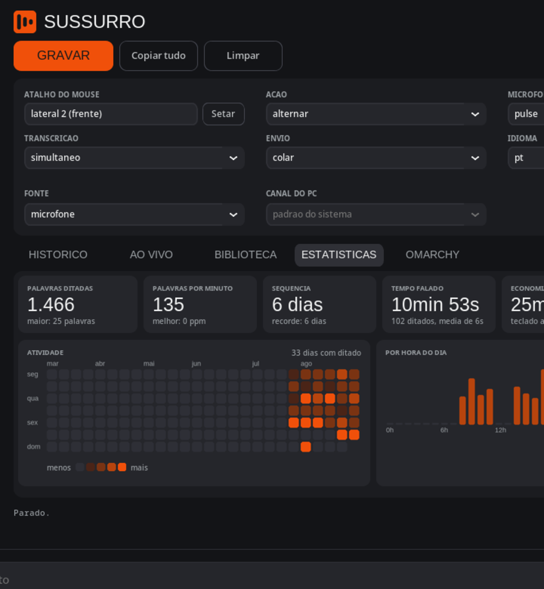
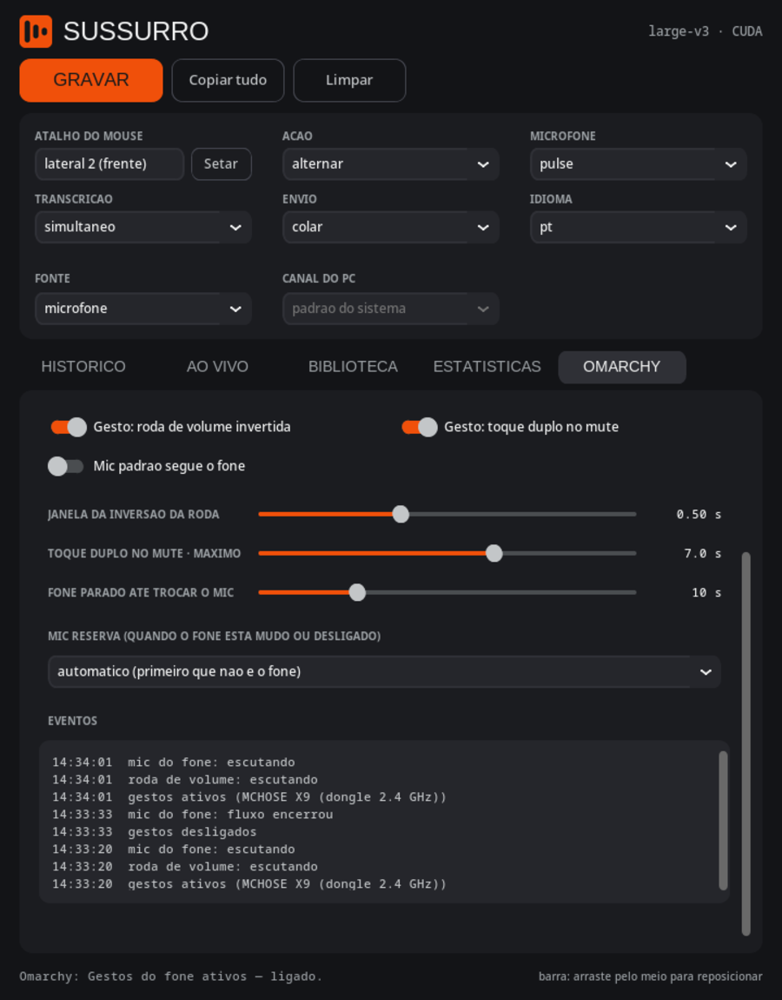

Ditado local · Português · Windows e Linux
Você fala, e a frase vai surgindo onde o cursor estiver, enquanto você ainda está falando. Tudo roda na sua máquina. Nenhum áudio sai do seu computador.
Whisper large-v3 rodando na sua GPU. Sem conta, sem nuvem, sem limite de palavras.
Código no GitHub sob licença MIT. Sem assinatura, sem versão Pro, sem pegadinha.
Transcrição simultânea, colagem no app que estiver em foco, biblioteca de termos e histórico com áudio.
Um atalho no mouse liga a gravação. Uma barra discreta mostra a onda do áudio. Você para de falar e o texto já está colado.
Botão lateral do mouse, atalho do teclado ou um gesto no headset.
O Silero VAD separa as frases pelo silêncio. Nada de gravar em blocos.
No modo simultâneo cada trecho é transcrito e colado enquanto o próximo é falado.
Aperte de novo pra parar. A frase vai pro histórico, com o áudio, pra você reouvir.

Uma cápsula de 152 por 40 pixels: cancelar, a onda do que o microfone está captando e confirmar. Sempre no topo, nunca rouba o foco, e aparece no monitor onde o cursor está.
Arraste pelo meio pra escolher onde ela fica. A posição é salva como fração da tela, então funciona em qualquer resolução.
O que você diz fica organizado, e o que o modelo erra você ensina uma vez só.
Cada frase ditada fica guardada com o áudio original. Reouça, copie de novo, veja o dia inteiro em ordem.

O Whisper insiste em escrever "nove router" quando você diz 9Router? Cadastre a variante errada e o termo certo. A biblioteca corrige o texto antes de colar e ainda enviesa a decodificação do modelo pros seus termos.

Palavras ditadas, palavras por minuto, sequência de dias, tempo falado e quanto tempo você economizou em relação a digitar.

Um gesto no headset liga a gravação. Você fala, o texto é colado e o Enter é apertado. Sem tocar no PC.

O fone só entrega ao PC volume, play e o áudio. Então o Sussurro lê o que dá pra ler: inverter a roda de volume rápido vira um gesto, e o toque duplo no mute é detectado pelo silêncio digital que o fone gera no microfone.
O Wispr Flow é excelente e polido. A diferença é onde o seu áudio vai parar, e quanto isso custa por mês.
| Sussurro | Wispr Flow | |
|---|---|---|
| Onde o áudio é processado | Na sua GPU. Funciona sem internet. | Na nuvem. Precisa de internet. |
| Preço | Grátis, sem limite de palavras | Grátis até 2.000 palavras/semana; Pro US$ 15/mês (US$ 12 no anual) |
| Código | Aberto (MIT) | Fechado |
| Sistemas | Windows e Linux | Mac, Windows, iPhone e Android. Sem Linux. |
| Conta e login | Não tem | Obrigatórios |
| Corrigir termos que o modelo erra | Biblioteca fonética local | Dicionário na conta |
| Histórico com áudio, estatísticas | Sim, no seu disco | Histórico na nuvem |
| Acionar pelo headset, Enter automático | Sim (Omarchy / Hyprland) | Não |
| Requisito | GPU NVIDIA | Qualquer máquina |
Dados do Wispr Flow conforme a página de preços e a documentação pública em setembro de 2026. Se algo mudou, abra um issue.
Python 3.11 ou mais novo, GPU NVIDIA, e pronto. As bibliotecas CUDA vêm pelos wheels da NVIDIA.
# clone e crie o ambiente git clone https://github.com/LucasOl1337/sussurro cd sussurro python3 -m venv .venv .venv/bin/pip install -r requirements.txt # rode .venv/bin/python app.py
:: clone e crie o ambiente git clone https://github.com/LucasOl1337/sussurro cd sussurro python -m venv .venv .venv\Scripts\pip install -r requirements.txt :: rode .venv\Scripts\python app.py
No Wayland, instale wl-clipboard e wtype pra colar. As regras de janela do Hyprland e a regra udev do headset estão em contrib/omarchy.